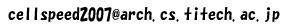

先進的計算基盤システムシンポジウムSACSIS2007併設企画
マルチコアプログラミングコンテスト 「Cellスピードチャレンジ2007」
| 主催： | 情報処理学会 計算機アーキテクチャ研究会 |
| 情報処理学会 組込みシステム研究会 | |
| 情報処理学会 ハイパフォーマンスコンピューティング研究会 | |
| 協賛： | ㈱東芝セミコンダクター社 |
| 株式会社ソニー・コンピュータエンタテインメント | |
| 日本アイ・ビー・エム株式会社 |
Cellスピードチャレンジ2007表彰 （5月24日 15：00～15：10，一橋記念講堂）
Cellスピードチャレンジ2007（5月24日15：20～16：50，一橋記念講堂） 座長：中村 宏（東大）
- 概要報告： 中村 宏（東大），吉瀬謙二（東工大）
- 規定課題（３位）報告：
木下正喬（大阪府立高専）
- 規定課題（２位）報告：
ルォン・ディン・フォン（東大）
- 規定課題（１位）報告：
花岡俊行（京大）
- 自由課題（２位）報告： Cell
Broadband EngineTMによる神経回路網
五十嵐潤（九工大）
- 自由課題（１位）報告： Cell
BEにおける計算機合成ホログラムのソフトウェア開発
柘植宗範（千葉大）
昨年度からCell Broadband EngineTM (Cell BE)に関する情報が本格的に公開され始め，その高いピーク性能，独特のアーキテクチャ，将来性などから高い注目を集めています．この動向は，例えば，SACSIS2006におけるCell
BEのチュートリアルの人気を見ても明らかになっています．また，2006年の11月にはPS3が発売され，Cell BEに対する注目度は更に高まっています．
Cell BEは，1個の汎用CPUコアと，SIMD構成の独特のコア(SPE)を8個搭載する並列システムとなっています．Cell BEの高い性能を引き出すために重要となるSPEにおいては，動的な分岐予測を排除してソフトウェアのヒントを必要とする点や，キャッシュを排除して効率的なDMA転送を必要とする点などにおいてプログラマにとって挑戦的なアーキテクチャとなっています．また，SIMD化や8コアを用いた効率的な並列化の手法も欠かせません．
情報処理学会 計算機アーキテクチャ研究会，組込みシステム研究会，ハイパフォーマンスコンピューティング研究会の主催により，先進的計算基盤システムシンポジウムSACSIS2007の併設企画として，このような挑戦的なアーキテクチャを持つCell
BEを対象とするマルチコアプログラミングコンテストを開催することとなりました．
参加者はチームを構成して，規定課題部門，自由課題部門あるいは両方に登録することができます．ただし，同一の参加者が規定課題部門の複数のチームに所属することはできません．1チームの人数は制限しません．1チーム1名としての参加も歓迎します．1チームに対して1つのCellオンラインのアカウントを提供します．優秀者はSACSIS2007にて表彰予定です(豪華賞金等についても検討中です)．
規定課題部門では，Cell BEを用いて規定の課題をどれだけ高速に解くことができるかを競います．自由課題部門では，Cell BEを利用してこれに興味を持つ人々で結果を共有できる興味深い実験や，既存のアプリケーションの移植(ポーティング)，プログラミングを容易にするツールの実装など，参加者が自由に課題を設定して取り組んでいただきます．
【規定課題部門の参加資格】
・チームの全メンバが株式会社東芝の提供するCell Users' Group会員規約，Cell Users' Groupコミュニティボード利用規約，Cellオンライン利用規約のすべてに同意していただける方
・2-4ページのドキュメントを公開資料としてご提供いただける方
・成績優秀者として登壇発表を依頼されたときに，SACSIS2007に参加して登壇発表を行うことができること(やむをえない事情を除く)
・成績優秀者として登壇発表をおこなった際の発表スライドを公開資料としてご提供いただける方
・GNU GENERAL PUBLIC LICENSE Version 2に基づいてソースコードを公開資料としてご提供いただける方
・チームの全メンバが，高校，高専，大学，大学院またはこれに準ずる学校の学生であること
・同一の参加者が規定課題部門の複数のチームに所属しないこと
・㈱東芝セミコンダクター社， 株式会社ソニー・コンピュータエンタテインメント及び，日本アイ・ビー・エム株式会社の従業員には参加資格がありません．
・㈱東芝セミコンダクター社， 株式会社ソニー・コンピュータエンタテインメント及び，日本アイ・ビー・エム株式会社においてインターンシップ中の学生には参加資格がありません．
【自由課題部門の参加資格】
・チームの全メンバが株式会社東芝の提供するCell Users' Group会員規約，Cell Users' Groupコミュニティボード利用規約，Cellオンライン利用規約のすべてに同意していただける方
・2-4ページのドキュメントを公開資料としてご提供いただける方
・本コンテストの成果をSACSIS2007ポスターセッションにおいて発表していただける方
・成績優秀者として登壇発表を依頼されたときに，SACSIS2007に参加して登壇発表を行うことができること(やむをえない事情を除く)
・成績優秀者として登壇発表をおこなった際の発表スライドを公開資料としてご提供いただける方
・㈱東芝セミコンダクター社， 株式会社ソニー・コンピュータエンタテインメント及び，日本アイ・ビー・エム株式会社の従業員には参加資格がありません．
・㈱東芝セミコンダクター社， 株式会社ソニー・コンピュータエンタテインメント及び，日本アイ・ビー・エム株式会社においてインターンシップ中の学生には参加資格がありません．
【その他注意事項】
・自由課題部門への参加資格は学生に限定しません．大学の教員，企業の開発者の方などの参加も歓迎します．
・自由課題部門において開発したソースコードの提供が必要という訳ではありませんが，是非，ソースコードの提供(公開)をご検討ください．
・規定課題部門の成果をSACSIS2007ポスターセッションにおいて発表されることを奨励します．
・Cellオンラインサービスのシステムサポートは平日の8時間のみとなります．コンテスト期間中にシステム障害が発生したとしても迅速な対応ができない場合がありますことをご了承ください．
・参加資格等はやむをえない事情により変更されることがあります．ホームページにて最新の情報をご確認ください
【参加申し込み】
以下のフォーマットに必要事項を記入して，cellspeed2007 [at] arch.cs.titech.ac.jp にメールを送ってください（"
[at] "を"@"に置き換えてください．）．メールのタイトルは「規定課題部門 参加申し込み」あるいは「自由課題部門 参加申し込み」としてください．
通常は数日以内に確認のメールを送ります．
--------------------------------------------------------------------
【規定課題部門 参加申し込み】
チーム名:
代表者氏名:
代表者Email: ※所属する学校のメールアドレスに限ります．
監督者名(指導教員など):
監督者Email:
全チームメンバ氏名:
所属および参加資格: ※例: ○○大学大学院修士課程1年
緊急連絡先(研究室電話番号など):
参加資格を満たし，Cellスピードチャレンジの規定課題部門に参加します．
--------------------------------------------------------------------
--------------------------------------------------------------------
【自由課題部門 参加申し込み】
チーム名:
代表者氏名:
代表者Email: ※所属機関（学校，企業等）のメールアドレスに限ります．
学生の場合，監督者名(指導教員など):
学生の場合，監督者Email:
全チームメンバ氏名:
所属：
緊急連絡先(研究室電話番号など):
参加資格を満たし，Cellスピードチャレンジの自由課題部門に参加します．
--------------------------------------------------------------------
株式会社 東芝様の運営するCell Users' Group向け「Cellオンライン」サービスを利用して，実機を用いたプログラミング，評価，デバッグ環境を提供します．
こちらからCellオンライン(Cellスピードチャレンジ2007)ユーザーマニュアルをダウンロードしてください．
【規定課題概要】
多数のデータの系列が入力として与えられたときに，これらをある順序にしたがって並び替える処理をソーティングと呼びます．Cellスピードチャレンジ2007の規定課題は「ソーティング」です．
ソーティングでは，データに含まれる並べ替えのために参照される項目をキーと呼びます．このキーは単精度の浮動小数点数(C言語におけるfloat型)とします．また，キーの値が昇順(小さい値が前方，大きい値が後方になるような順序)になるようにデータを並び替えるものとします．
たとえば，高校などの学籍名簿のn個のデータ系列(A1, A2, ..., An)を，学籍番号順に(学籍番号をキーとして)並び替える処理を考えます．各データAiは，学籍番号の他に，その番号を持つ学生名や入学年月日などの情報をもつかもしれません．ソーティングはこれらのAiを学籍番号の小さい順に並び替えるという処理です．
例題：
次に示す10個の浮動小数点数をキーとするデータ系列をソーティングせよ．(この例題ではキーの値のみを示していることに注意してください．)
34.5 10.2 76.9 68.0 99.3 27.4 93.4 70.0 23.8 57.4
答え：
10.2 23.8 27.4 34.5 57.4 68.0 70.0 76.9 93.4 99.3
参考図書：
平田富夫著「アルゴリズムとデータ構造」森北出版
S・アクル著「並列ソーティング・アルゴリズム」啓学出版
規定課題のための ツールキット Version 1.0 を公開します．規定課題 詳細はこちらです．
規定課題のための お試し版ツールキット Version 0.4 を公開します．この版は4個のSPEを利用する並列版のソーティングプログラムです．
規定課題のための お試し版ツールキット Version 0.1 を公開します．この版は１個のSPEを利用して（並列化されていない）ソーティングをおこなうシンプルなもので，様々な最適化の余地を残しています．
今後，並列化されたツールキットを追加していく予定です．
| 2006/11/29(木) | 規定課題概要の公開 |
| 2006/12/08(金) | 参加受付の開始 |
| 2006/12/15(金)頃 | Cellオンラインの利用開始 |
| 2006/12/29(金) | お試し版ツールキットの公開 |
| 2007/02/02(金) | 参加受付の締切 |
| 2007/02/09(金) | 規定課題 詳細およびツールキットの公開 |
| 2007/02/09(金) | 規定課題 予選ラウンド開始 |
| 2007/03/09(金) | 規定課題 予選ラウンド終了，プログラム等の提出 |
| 2007/03/09(金) | 自由課題 終了（ドキュメントの提出締め切りは１６日） |
| 2007/03/14(水) | 規定課題 決勝ラウンド開始 |
| 2007/03/28(水) | 規定課題 決勝ラウンド終了，プログラム等の提出 |
| 2007/05/23（水） - 25（金） | SACSIS2007にて表彰 |
２００７年２月３日（土）２０：００PM～２月５日（月）１０：００AM の間，点検のためCellオンラインを停止する予定です．ご注意ください．
アドバイザリ委員会
| 朴泰祐 | 筑波大学 | |
| 高田広章 | 名古屋大学 | |
| 天野英晴 | 慶應義塾大学 | |
| 中島浩 | 京都大学 |
実行委員会
| 委員長 | 中村宏 | 東京大学 |
| 副委員長 | 吉瀬謙二 | 東京工業大学 |
| 井上弘士 | 九州大学 | |
| 合田憲人 | 東京工業大学 | |
| 冨山宏之 | 名古屋大学 | |
| 追川修一 | 筑波大学 | |
| 中田秀基 | 産業技術総合研究所 | |
| 光来健一 | 東京工業大学 | |
| 高橋大介 | 筑波大学 | |
| 片桐孝洋 | 電気通信大学 | |
| 菅原豊 | 東京大学 | |
| 大津金光 | 宇都宮大学 | |
| 木村啓二 | 早稲田大学 | |
| 近藤正章 | 東京大学 | |
| 吉見真聡 | 慶應義塾大学 | |
| 福田悦生 | ㈱東芝セミコンダクター社 | |
| 近藤伸宏 | ㈱東芝セミコンダクター社 | |
| 山崎剛 | 株式会社ソニー・コンピュータエンタテインメント | |
| 瀧塚博志 | 株式会社ソニー・コンピュータエンタテインメント | |
| 川瀬桂 | 日本アイ・ビー・エム株式会社 |
"PLAYSTATION"は株式会社ソニー・コンピュータエンタテインメントの登録商標です．
グリッドチャレンジのホームページを雛形として利用させていただきました．
グリッドチャレンジ実行委員会の皆様に感謝いたします．
Last updated: 2007/05/22
Cellスピードチャレンジ2007実行委員会